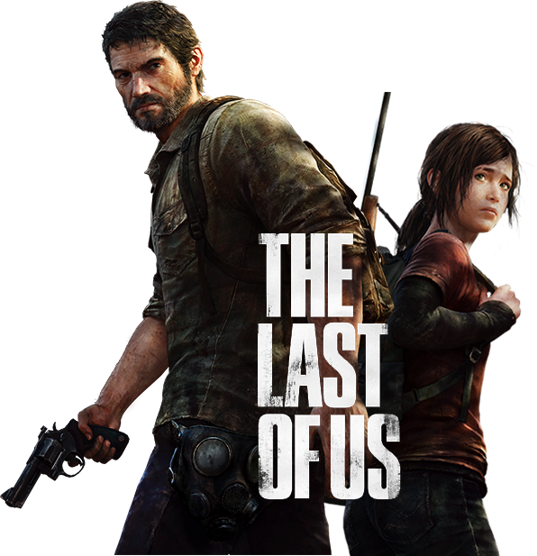

<div fxLayout="column">

  <div fxLayout="row" fxLayoutAlign="center">
    
    <div class = "bg-container">
      <div fxLayout = "row">
        <div class="header-container"  fxLayout = "column" fxLayoutAlign = "start center">
          
          <div class = "nav-container" fxFlexAlign = "stretch" fxLayout = "column" fxLayoutAlign="center" >
            <div class = "nav-items" fxLayout = "row" fxLayoutAlign = "space-between center"> 
                <li class = "nav-item active">
                  <a href="">INICIO</a>
                </li>
                <li class = "nav-item">
                  <a href="">HISTORIA</a>
                </li>
                <li class = "nav-item">
                  <a href="">PERSONAJES</a>
                </li>
                <li class = "nav-item">
                  <a href="">SOUNDTRACK</a>
                </li>
                <li class = "nav-item">
                  <a href="">GUIA</a>
                </li>
                <li class = "nav-item">
                  <a href="">COMPAÑIA</a>
                </li>
            </div>          
          </div>
        </div>
      </div>
      <div fxLayout = "row" fxLayoutAlign="center">
        <div class="main-content" fxLayout = "column" fxLayoutAlign = "space-between center">
          <h1 class = "quote">“NO SOMOS ASESINOS. <br /> SÓLO SOBREVIVIMOS”</h1>
          <div class="trailer-container"> 
            <iframe class = "trailer" src="https://www.youtube.com/embed/OQWD5W3fpPM" frameborder="0" allowfullscreen></iframe>
          </div>
          <div class="review-container">
            <p class="review">
              “The Last Of Us” sigue a Joel, quien intenta proteger a su familia en los
              primeros momentos del brote, sin embargo, un problema con los
              militares le da un terrible giro a su vida. Al cabo de la introducción,
              pasan 20 años y Joel se encuentra en un barrio protegido por el ejército
              y el mundo nunca se pudo recuperar del incidente. La aventura
              principal del juego comienza cuando la líder del grupo que se opone a
              los militares contacta a Joel para pedirle que escolte a una niña, Ellie, a
              un laboratorio. Ellie quizá es la última esperanza para la humanidad.
            </p>
          </div>
          <button fxFlexAlign = "end" class="review-btn">Conoce más</button>
        </div>
      </div>
      <div fxLayout = "row" fxLayoutAlign = "center">
        <div class="footer" fxLayout = "column" fxLayoutAlign = "space-between">
          
          <p class="footer-text">
            ©2013 THE LAST OF US DE SONY COMPUTER ENTERTAINMENT AMERICA LLC. ES DESARROLLADO POR <br />
            NAUGHTY DOG LLC. TODAS LAS DEMÁS MARCAS COMERCIALES Y DERECHOS DE AUTOR PERTENECEN A SUS RESPECTIVOS PROPIETARIOS. TODOS LOS DERECHOS <br />
            RESERVADOS.
          </p>
          <div class = "collaborators" fxLayout = "row" fxLayoutAlign = "space-between">
            
            
            
            
          </div>
          <p class="footer-text">
            THE LAST OF US SE ENCUENTRA DISPONIBLE EN
          </p>
          <div class="extra-info" fxLayout = "row" fxLayoutAlign = "space-between">
            <div fxFlex = "12.5%">
              
            </div>
            <div fxFlex = "50%" class = "consoles" fxLayout = "row" fxLayoutAlign = "center">
              
              
            </div>
            <div fxFlex = "12.5%" class = "social" fxLayout = "row" fxLayoutAlign = "space-around center">
              
              
              
            </div>
          </div>
        </div>
      </div>
    </div>

  </div>
</div>


